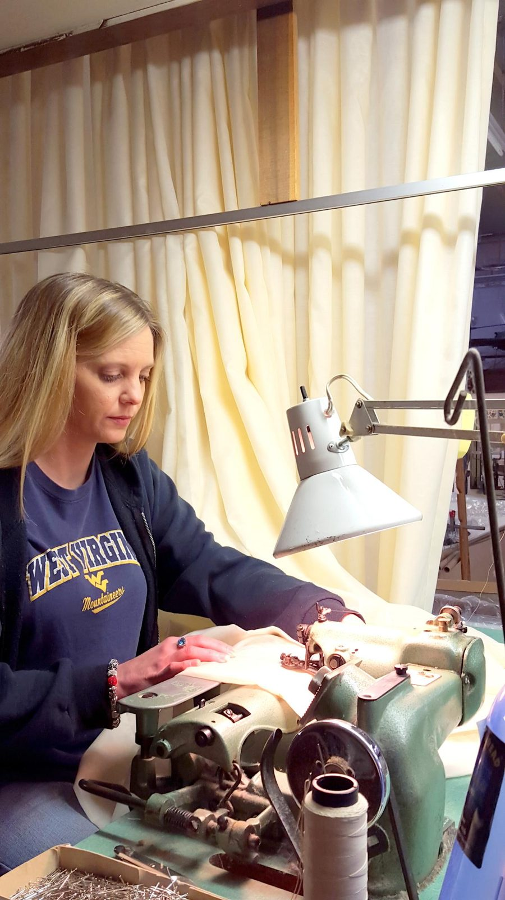
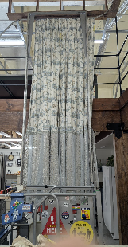
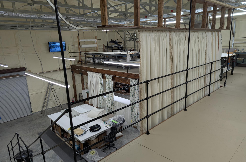
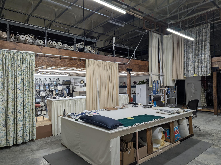
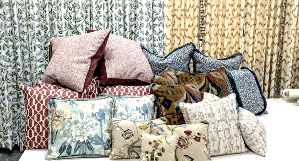

The custom workroom
Your specifications.
Our craftsmanship.
Custom draperies and top treatments, fabricated for the design industry.
Explore the finished work
The way we work
Hanging makes
the difference.
We manufacture our draperies by placing the tops and sides in, then pinning and hanging to finish. The length is set while the drapery hangs, allowing for the exact finished measurement.
This method allows us to work efficiently with standard sizes, 118-inch product, and oversized draperies.
Handcrafted to your specifications
The finishing touch.
Custom top treatments are handcrafted in our shop to your specifications.




The finished work
A fabric lookbook.
Select a photograph for a closer look.
Unfold the full lookbook 37 more photographs
Behind the finished piece
Step inside the workroom.
From your imagination to our workroom
Let’s bring your vision to life.
Contact us for more information or an estimate.